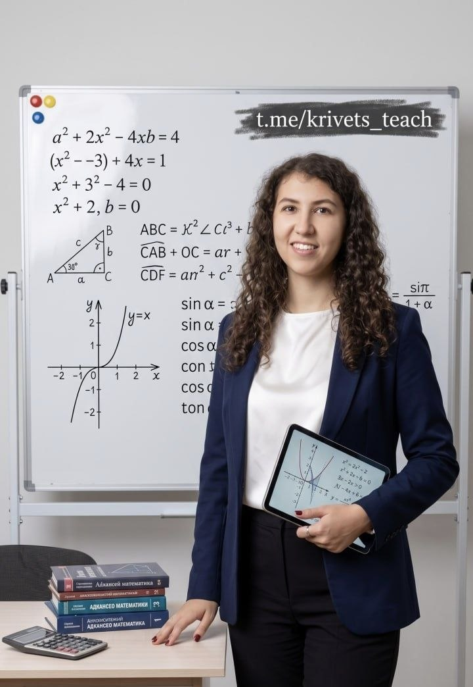

Начальная школа
Математика 1–4 класс
Выберите класс. Все темы года собраны в списке «Что проходим», и по каждой теме есть тренажёр — выбирайте её в списке тем над примером.
Программа по каждому классу, бесконечные примеры с проверкой, задачи с полным разбором, тесты, теория и шпаргалки. Всё — по действующей школьной программе (ФГОС): подготовка к школе, 1–4 класс и математика 5–9 класс.
В каждом разделе: программа года, тренажёр с подсказками, задачи с разбором и тест для самопроверки.
5–7 лет: счёт, состав числа, фигуры, логика и чек-лист готовности к школе.
ОткрытьСчёт, таблица умножения, задачи, площадь и периметр, движение, единицы измерения.
ОткрытьДроби, проценты, отрицательные числа, уравнения, степени, квадратные уравнения, функции и геометрия.
ОткрытьТаблица умножения, единицы измерения и формулы — можно распечатать и повесить над столом.
ОткрытьСправочник правил и формул с поиском: от состава числа до формул сокращённого умножения.
ОткрытьКак заниматься дома без слёз, как разбирать задачу и когда пора звать репетитора.
ОткрытьДошкольная математика — это не «решать примеры», а понимать количество, порядок и форму. Занимайтесь по 10–15 минут в игровой форме, лучше каждый день.
Выберите класс. Все темы года собраны в списке «Что проходим», и по каждой теме есть тренажёр — выбирайте её в списке тем над примером.
Здесь чаще всего появляются пробелы: дроби, проценты, отрицательные числа и первые доказательства. Пройдите тест — он покажет, какие темы просели.
Распечатайте и повесьте над рабочим столом — это экономит родителям десятки часов объяснений.
Коротко и по делу — то, что нужно понимать и помнить. Ищите по слову или выберите класс.
Восемь правил, которые снимают большую часть конфликтов вокруг домашней работы.
15–20 минут каждый день для 1–4 класса и 25–40 минут для 5–9 дают больше, чем два часа в воскресенье.
Не гонитесь за быстрым счётом, пока ребёнок не может объяснить, почему получается такой ответ.
Проверяйте способ, а не только ответ. Верный ответ при неверном рассуждении — мина замедленного действия.
Отрезок, таблица, краткая запись. Большинство ошибок в задачах — это непонятое условие, а не арифметика.
«Здесь ошибка, давай найдём где» работает. «Ты невнимательный» — не работает и бьёт по мотивации.
По одному столбику за подход, вразнобой, с карточками. Сразу проговаривайте и обратное действие — деление.
Один блок — одна тема. Переключение между делами стоит дороже, чем кажется, особенно младшим школьникам.
Наводящие вопросы: «что известно?», «что нужно найти?», «каким действием?». Ручку держит ребёнок.
Я, Кривец Анастасия, репетитор математики и начальных классов. Работаю по действующей школьной программе: нахожу и закрываю пробелы, объясняю тему до полного понимания и довожу навык до автоматизма. Узнать ещё больше полезной информации по обучению вы можете в моём Telegram-канале.
Telegram-канал — это не только расписание и стоимость занятий. Это канал о школьной жизни и репетиторстве: разборы задач, лайфхаки для учёбы, что почитать ребёнку, как удержать мотивацию и когда уже пора подключать репетитора. Загляните — и решите сами, что вам сейчас нужно.
